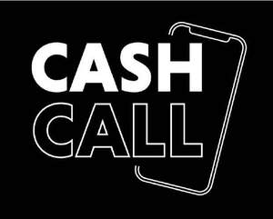

Trade Mark Journal No.2026/006 6 February 2026
UK00004300030 24 November 2025 (9,38,41)
Mark 1

Mark 2
- Class 9
- Audio and video recordings; downloadable pre-recorded music and video; display screens; tapes, DVDs, CD-roms; computer application software for mobile phones; mobile apps; software for online messaging; software for processing images, graphics, audio, video and text; software for smartphones; software for tablet computers; virtual reality software; apparatus and instruments for geolocation; podcasts; downloadable software, namely digital assets authenticated by non-fungible tokens (NFTs); computer software to enable uploading, downloading, accessing, posting, displaying, streaming, linking, sharing or otherwise providing electronic media or information via computer and communication networks; computer game software; computer game software for card games, slot games, video games, gaming, gambling, casino, bingo, poker, instant win, lottery and betting activities; computer game software and computer game programs provided via the internet; computer software for conducting and administration of online games, gambling and competitions; computer application software for games, card games, slot games, video games, gaming, gambling, casino, bingo, poker, instant win, lottery and betting activities; downloadable online game software and game-related applications, namely, downloadable computer game programs and downloadable electronic game programs; interactive video game programs; augmented reality software; augmented reality software for use in mobile devices for integrating electronic data with real world environments; software for generating virtual images; virtual server software; virtual reality software for telecommunications; virtual reality software for simulation; interactive data media; radio and television broadcasting apparatus and instruments; apparatus for recording and reproducing sound and/or images; video games; downloadable pre-recorded music and video for a fee or pre-paid subscription via the Internet; downloadable electronic publications; electronic databases; computer software; application software; data and file management and database software; computer networking and data communications equipment; data storage devices and media; broadcasting equipment; computer software platforms recorded or downloadable; computer software platforms for social networking; recording apparatus; apparatus for reproducing images, sound and data; games software; computer games; SIM cards; downloadable ring tones; consultancy, information and advisory services relating to the aforesaid services.
- Class 38
- Telecommunications; broadcasting services; radio broadcasting services; television broadcasting; cable television broadcasting; radio broadcasting over the Internet and other communication networks; Internet communication services; communications by computer terminals; digital radio broadcasting services; streaming of radio programmes and audio material on the Internet; transmitting streamed sound, audio-visual recordings and multimedia content via mobile telephone devices; transmitting audio-visual recordings and multimedia content via the Internet; news information and agency services; providing access to databases in the field of computer games, gaming and social networking; providing virtual facilities for real-time interaction among computer users; mobile network communications; news agency services; transmission of sound, video and information; streaming of audio, visual and audiovisual material via a global computer network; data streaming; providing access to databases; providing internet chat rooms; operating chat rooms; rental of access time to global computer networks; transmission of digital files; consultancy, information and advisory services relating to the aforesaid services.
- Class 41
- Entertainment services; educational services; cultural services; radio production services; television production services; television program syndication and distribution; syndication of radio programs and radio program distribution; news syndication reporting; publishing services; non downloadable electronic publications; providing on-line music and video, non-downloadable; video and audio rental services; organisation of entertainment, cultural and educational events; news reporting services; club services [entertainment]; disc jockey services; game services provided online from a computer network; presentation of live performances; entertainment services in the nature of arranging social entertainment events; organising competitions; music composition services; online entertainment services; provision of entertainment services, gaming services, card game services, slot game services, video game services, gambling services, casino services, bingo services, poker game services, lottery services and/or betting services by means of the internet, telephone, mobile devices, handheld devices, television, radio or by any other form of communications means (electronic or otherwise); bingo services; conducting multiple player games of chance; gaming services; gambling services; betting services; games and competitions provided over a radio station, telephone service, text message service or digital streaming service; organisation of concerts and live shows; virtual events namely, concerts, competitions, conferences, talent shows, festivals, musical performances, carnivals, fundraisers; virtual disc jockey services; provision of radio and television programmes and of music, sound and video recordings via communications networks; production, presentation, distribution, syndication and rental of radio and television programmes and of music, sound and video recordings; non-downloadable radio programmes, games, television programmes, videos, sound, images or data accessed from the Internet or other communication networks; providing non-downloadable pre-recorded music and video for a fee or pre-paid subscription via the Internet; consultancy, information and advisory services relating to the aforesaid services.
Global Media Group Services Limited
Representative: Mishcon de Reya LLP